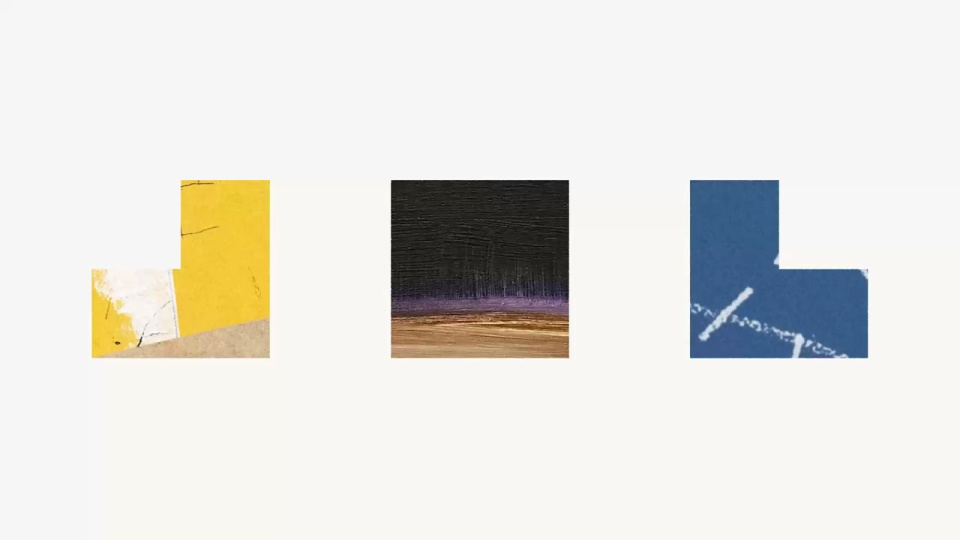
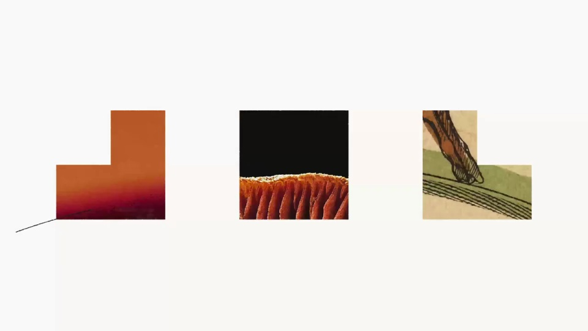
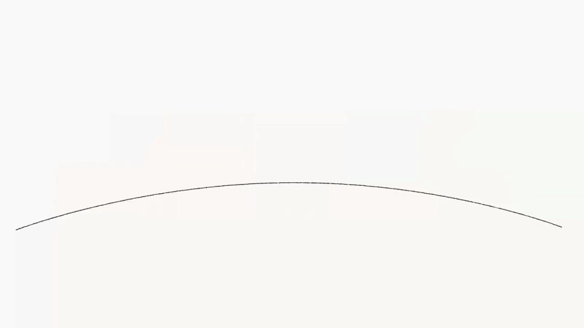
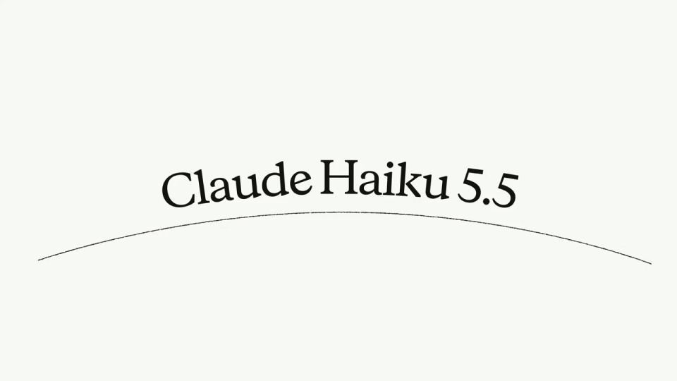

Anthropic / V003
Claude Haiku 5.5 发布
保持三列构图，用纹理快切制造变化。细弧线先承接图块，再承接产品名，最后回到开场图形。
构图与编排 可播放 · 可替换内容
整体编排规则示例
查看 HTML 源码
<!doctype html><html lang="zh-CN"><meta charset="utf-8"><meta name="viewport" content="width=device-width,initial-scale=1"><title>Claude Haiku 5.5 发布 · sequence</title><style>html,body{margin:0;width:100%;height:100%;overflow:hidden;background:#f8f8f5}canvas{display:block;width:100%;height:100%;object-fit:contain}</style><body data-mode="sequence"><canvas width="1000" height="600"></canvas><script src="data.js"></script><script src="common.js"></script><script src="scene.js"></script><script src="bridge.js"></script></body></html>画面元素三列图形槽位方形与 L 形遮罩纹理填充弧线基线产品标题
MOTION LANGUAGE
动作与构图
局部动作 · 构图规则
01
固定槽位，切换纹理
固定槽位，切换纹理规则示例
查看 HTML 源码
<!doctype html><html lang="zh-CN"><meta charset="utf-8"><meta name="viewport" content="width=device-width,initial-scale=1"><title>Claude Haiku 5.5 发布 · sequence</title><style>html,body{margin:0;width:100%;height:100%;overflow:hidden;background:#f8f8f5}canvas{display:block;width:100%;height:100%;object-fit:contain}</style><body data-mode="clip" data-start="0" data-end="4.2"><canvas width="1000" height="600"></canvas><script src="data.js"></script><script src="common.js"></script><script src="scene.js"></script><script src="bridge.js"></script></body></html>三个图形保持相同尺度和间距。方形与 L 形交替，纹理在遮罩内部快切；槽位本身不追着纹理移动。
米白底留出空白。芥末黄、玫红与灰蓝集中在图块内部，黑色只留给弧线与产品名。
02
让弧线接住产品名
让弧线接住产品名规则示例
查看 HTML 源码
<!doctype html><html lang="zh-CN"><meta charset="utf-8"><meta name="viewport" content="width=device-width,initial-scale=1"><title>Claude Haiku 5.5 发布 · sequence</title><style>html,body{margin:0;width:100%;height:100%;overflow:hidden;background:#f8f8f5}canvas{display:block;width:100%;height:100%;object-fit:contain}</style><body data-mode="clip" data-start="4.2" data-end="8.7"><canvas width="1000" height="600"></canvas><script src="data.js"></script><script src="common.js"></script><script src="scene.js"></script><script src="bridge.js"></script></body></html>图块退场后，弧线留在原处，单行产品名接替图块成为主体。用同一条基线连接两种画面。
标题保持中等字重的衬线字形，先留足阅读时间，再退回三块拼贴。
03
首尾回到同一构图
纹理快切 → 弧线进入 → 标题留读 → 回到拼贴。结尾恢复三个槽位，循环时保持布局连续。
04
换内容，保留这三个关系
| 可替换 | 保持不变 |
|---|---|
| 图块纹理与强调色 | 三列位置、等距与形状变化 |
| 产品名 | 弧线承接与单行标题 |
| 展示时长 | 快切与留读的节奏差 |
SEQUENCE
段落与节奏
点击段落，定位到上方编排示意。




画面参考 · 离散静帧
KEEP THE RELATIONSHIPS
制作其他主题
- 保留三列、遮罩变化、弧线承接和循环节奏；替换纹理及产品名。
- 标题建议单行 12–22 个拉丁字符；中文需按实际字宽调整。
制作约束
三列图形槽位 / 方形与 L 形遮罩 / 纹理填充 / 弧线基线 / 产品标题
- 三列位置保持稳定，内部纹理与 L 形朝向离散切换；切换素材不等于整体图块平移。
- 低位细弧线承接三列图块，再承接产品名，靠同一基线维持连续性。
- 标题留读后消失，图块回到起始构图；尾段是循环回接。